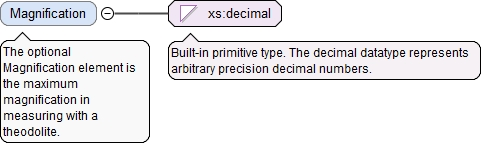

The optional speedUnit attribute defines the UnitName for the SpeedValueType.
Source
<xs:element name="LongitudinalTrackingSpeed" type="SpeedValueType" minOccurs="0"><xs:annotation><xs:documentation>The optional LongitudinalTrackingSpeed element is the maximum speed in longitudinal tracking with a theodolite.</xs:documentation></xs:annotation></xs:element>
The optional speedUnit attribute defines the UnitName for the SpeedValueType.
Source
<xs:element name="LateralTrackingSpeed" type="SpeedValueType" minOccurs="0"><xs:annotation><xs:documentation>The optional LateralTrackingSpeed element is the maximum speed in lateral tracking with a theodolite.</xs:documentation></xs:annotation></xs:element>
The optional Magnification element is the maximum magnification in measuring with a theodolite.
Diagram

Type
xs:decimal
Properties
content
simple
minOccurs
0
Source
<xs:element name="Magnification" type="xs:decimal" minOccurs="0"><xs:annotation><xs:documentation>The optional Magnification element is the maximum magnification in measuring with a theodolite.</xs:documentation></xs:annotation></xs:element>
<xs:element name="FieldOfViewDiameter" type="LinearValueType" minOccurs="0"><xs:annotation><xs:documentation>The optional FieldOfViewDiameter element is the field of view diameter of a theodolite.</xs:documentation></xs:annotation></xs:element>
<xs:element name="ApertureSize" type="LinearValueType" minOccurs="0"><xs:annotation><xs:documentation>The optional ApertureSize element is the aperture size of a theodolite.</xs:documentation></xs:annotation></xs:element>
<xs:element name="MaxFocusDistance" type="LinearValueType" minOccurs="0"><xs:annotation><xs:documentation>The optional MaxFocusDistance element is the (maximum) focal distance of a theodolite.</xs:documentation></xs:annotation></xs:element>
<xs:element name="AngularAccuracy" type="AngularValueType" minOccurs="0"><xs:annotation><xs:documentation>The optional AngularAccuracy element is the accuracy in measuring an angle with a theodolite.</xs:documentation></xs:annotation></xs:element>
<xs:element name="MaxTiltCompensation" type="AngularValueType" minOccurs="0"><xs:annotation><xs:documentation>The optional MaxTiltCompensation element is the maximum tilt compensated with the tilt sensor.</xs:documentation></xs:annotation></xs:element>
The required id attribute is the QIF id of the measurement resource, used for referencing.
Source
<xs:element name="ChargeCoupledDeviceCameraSensor" type="ChargeCoupledDeviceCameraSensorType" minOccurs="0"><xs:annotation><xs:documentation>The optional ChargeCoupledDeviceCameraSensor element defines the charge coupled device (CCD) camera associated with a theodolite.</xs:documentation></xs:annotation></xs:element>
<xs:element name="MinFocusDistance" type="LinearValueType" minOccurs="0"><xs:annotation><xs:documentation>The optional MinFocusDistance element is the minimum focal distance of a theodolite.</xs:documentation></xs:annotation></xs:element>
<xs:element name="EffectiveDiameterOfObjective" type="LinearValueType" minOccurs="0"><xs:annotation><xs:documentation>The optional EffectiveDiameterOfObjective element is the effective diameter of the theodolite objective.</xs:documentation></xs:annotation></xs:element>
The (required) UnitName attribute is the unit name for the UserDefinedUnitValueType.
Source
<xs:element name="StadiaBaseConstant" type="UserDefinedUnitValueType" minOccurs="0"><xs:annotation><xs:documentation>The optional StadiaBaseConstant element is the additive stadia constant of a theodolite.</xs:documentation></xs:annotation></xs:element>
The (required) UnitName attribute is the unit name for the UserDefinedUnitValueType.
Source
<xs:element name="StadiaRateConstant" type="UserDefinedUnitValueType" minOccurs="0"><xs:annotation><xs:documentation>The optional StadiaRateConstant element is the multiplier constant of stadia.</xs:documentation></xs:annotation></xs:element>
The (required) UnitName attribute is the unit name for the UserDefinedUnitValueType.
Source
<xs:element name="MinPowerSupplyVoltage" type="UserDefinedUnitValueType" minOccurs="0"><xs:annotation><xs:documentation>The optional MinPowerSupply element is the minimum power supply voltage of a theodolite.</xs:documentation></xs:annotation></xs:element>
The (required) UnitName attribute is the unit name for the UserDefinedUnitValueType.
Source
<xs:element name="MaxPowerSupplyVoltage" type="UserDefinedUnitValueType" minOccurs="0"><xs:annotation><xs:documentation>The optional MaxPowerSupplyVoltage element is the maximum power supply voltage of a theodolite.</xs:documentation></xs:annotation></xs:element>
The required id attribute is the QIF id of the measurement resource, used for referencing.
Source
<xs:element name="Laser" type="LaserType" minOccurs="0"><xs:annotation><xs:documentation>The optional Laser element is the laser used in a theodolite.</xs:documentation></xs:annotation></xs:element>
The required id attribute is the QIF id of the measurement resource, used for referencing.
Source
<xs:complexType name="TheodoliteType"><xs:annotation><xs:documentation>The TheodoliteType defines a theodolite measuring device.</xs:documentation></xs:annotation><xs:complexContent><xs:extension base="UniversalDeviceType"><xs:sequence><xs:element name="LongitudinalTrackingSpeed" type="SpeedValueType" minOccurs="0"><xs:annotation><xs:documentation>The optional LongitudinalTrackingSpeed element is the maximum speed in longitudinal tracking with a theodolite.</xs:documentation></xs:annotation></xs:element><xs:element name="LateralTrackingSpeed" type="SpeedValueType" minOccurs="0"><xs:annotation><xs:documentation>The optional LateralTrackingSpeed element is the maximum speed in lateral tracking with a theodolite.</xs:documentation></xs:annotation></xs:element><xs:element name="Magnification" type="xs:decimal" minOccurs="0"><xs:annotation><xs:documentation>The optional Magnification element is the maximum magnification in measuring with a theodolite.</xs:documentation></xs:annotation></xs:element><xs:element name="FieldOfViewDiameter" type="LinearValueType" minOccurs="0"><xs:annotation><xs:documentation>The optional FieldOfViewDiameter element is the field of view diameter of a theodolite.</xs:documentation></xs:annotation></xs:element><xs:element name="ApertureSize" type="LinearValueType" minOccurs="0"><xs:annotation><xs:documentation>The optional ApertureSize element is the aperture size of a theodolite.</xs:documentation></xs:annotation></xs:element><xs:element name="MaxFocusDistance" type="LinearValueType" minOccurs="0"><xs:annotation><xs:documentation>The optional MaxFocusDistance element is the (maximum) focal distance of a theodolite.</xs:documentation></xs:annotation></xs:element><xs:element name="AngularAccuracy" type="AngularValueType" minOccurs="0"><xs:annotation><xs:documentation>The optional AngularAccuracy element is the accuracy in measuring an angle with a theodolite.</xs:documentation></xs:annotation></xs:element><xs:element name="MaxTiltCompensation" type="AngularValueType" minOccurs="0"><xs:annotation><xs:documentation>The optional MaxTiltCompensation element is the maximum tilt compensated with the tilt sensor.</xs:documentation></xs:annotation></xs:element><xs:element name="ChargeCoupledDeviceCameraSensor" type="ChargeCoupledDeviceCameraSensorType" minOccurs="0"><xs:annotation><xs:documentation>The optional ChargeCoupledDeviceCameraSensor element defines the charge coupled device (CCD) camera associated with a theodolite.</xs:documentation></xs:annotation></xs:element><xs:element name="MinFocusDistance" type="LinearValueType" minOccurs="0"><xs:annotation><xs:documentation>The optional MinFocusDistance element is the minimum focal distance of a theodolite.</xs:documentation></xs:annotation></xs:element><xs:element name="EffectiveDiameterOfObjective" type="LinearValueType" minOccurs="0"><xs:annotation><xs:documentation>The optional EffectiveDiameterOfObjective element is the effective diameter of the theodolite objective.</xs:documentation></xs:annotation></xs:element><xs:element name="StadiaBaseConstant" type="UserDefinedUnitValueType" minOccurs="0"><xs:annotation><xs:documentation>The optional StadiaBaseConstant element is the additive stadia constant of a theodolite.</xs:documentation></xs:annotation></xs:element><xs:element name="StadiaRateConstant" type="UserDefinedUnitValueType" minOccurs="0"><xs:annotation><xs:documentation>The optional StadiaRateConstant element is the multiplier constant of stadia.</xs:documentation></xs:annotation></xs:element><xs:element name="MinPowerSupplyVoltage" type="UserDefinedUnitValueType" minOccurs="0"><xs:annotation><xs:documentation>The optional MinPowerSupply element is the minimum power supply voltage of a theodolite.</xs:documentation></xs:annotation></xs:element><xs:element name="MaxPowerSupplyVoltage" type="UserDefinedUnitValueType" minOccurs="0"><xs:annotation><xs:documentation>The optional MaxPowerSupplyVoltage element is the maximum power supply voltage of a theodolite.</xs:documentation></xs:annotation></xs:element><xs:element name="Laser" type="LaserType" minOccurs="0"><xs:annotation><xs:documentation>The optional Laser element is the laser used in a theodolite.</xs:documentation></xs:annotation></xs:element></xs:sequence></xs:extension></xs:complexContent></xs:complexType>